library(msqrob2gui)
options(shiny.maxRequestSize = 500 * 1024^2)
launchMsqrob2App()Introduction to proteomics data analysis - MaxQuant Data Dependent Acquisition spike-in study
Lieven Clement, Stijn Vandenbulcke, Oliver M. Crook and Christophe Vanderaa ![]()
1 Introduction
Label-Free Quantitative mass spectrometry based workflows for differential expression (DE) analysis of proteins is often challenging due to peptide-specific effects and context-sensitive missingness of peptide intensities.
msqrob2provides peptide-based workflows that can assess for DE directly from peptide intensities and outperform summarisation methods which first aggregate MS1 peptide intensities to protein intensities before DE analysis. However, they are computationally expensive, often hard to understand for the non-specialised end-user, and they do not provide protein summaries, which are important for visualisation or downstream processing.msqrob2therefore also proposes a novel summarisation strategy, which estimates MSqRob’s model parameters in a two-stage procedure circumventing the drawbacks of peptide-based workflows.the summarisation based workflow in
msqrob2maintains MSqRob’s superior performance, while providing useful protein expression summaries for plotting and downstream analysis. Summarising peptide to protein intensities considerably reduces the computational complexity, the memory footprint and the model complexity. Moreover, it renders the analysis framework to become modular, providing users the flexibility to develop workflows tailored towards specific applications.
In this vignette we will demonstrate how to perform msqrob’s summarisation based workflow starting from a Maxquant search on a subset of the cptac spike-in study.
Examples on our peptide-based workflows and on the analysis of more complex designs can be found on our companion website msqrob2 book.
Technical details on our methods can be found in (goeminne2016?), (goeminne2020?), (sticker2020?) and (vandenbulcke2025?).
2 Background
This case-study is a subset of the data of the 6th study of the Clinical Proteomic Technology Assessment for Cancer (CPTAC). In this experiment, the authors spiked the Sigma Universal Protein Standard mixture 1 (UPS1) containing 48 different human proteins in a protein background of 60 ng/\(\mu\)L Saccharomyces cerevisiae strain BY4741. Two different spike-in concentrations were used: 6A (0.25 fmol UPS1 proteins/\(\mu\)L) and 6B (0.74 fmol UPS1 proteins/\(\mu\)L) [5]. We limited ourselves to the data of LTQ-Orbitrap W at site 56. The data were searched with MaxQuant version 1.5.2.8, and detailed search settings were described in Goeminne et al. (2016) [1]. Three replicates are available for each concentration.
2.1 Installation instructions and setup
You can find the installation instructions for all required software to run this exercise in software. Install:
- R and RStudio
QFeaturesto read and process mass spectrometry (MS) quantitative datamsqrob2to perform robust statistical inference for quantitative MS proteomicsmsqrob2guithe GUI to msqrob2
Upon installation
- Open Rstudio, you will see the following window
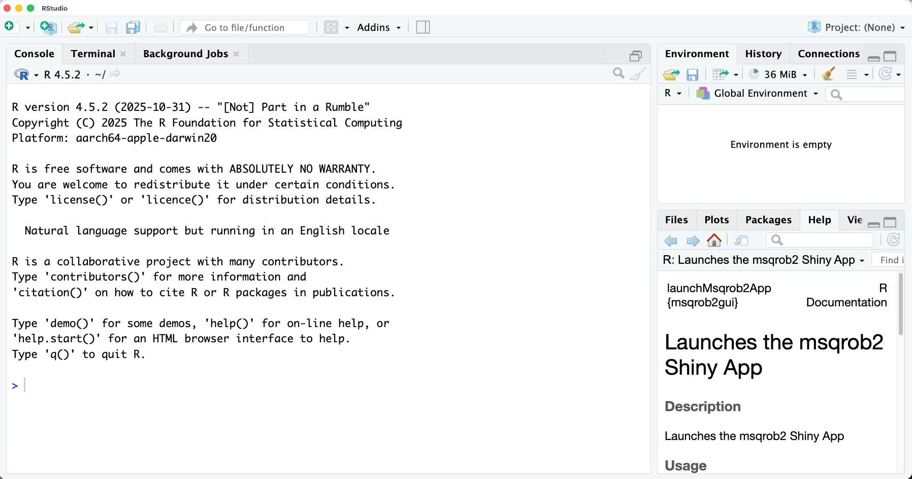
- Copy and paste following commands in the console window and type enter
- The first line will load the
msqrob2guipackage and its dependencies (includingmsqrob2) - The second line will increase the available the maximal RAM usage by the application to 500 MB.
- The third line launches the msqrob2App with an end to end workflow
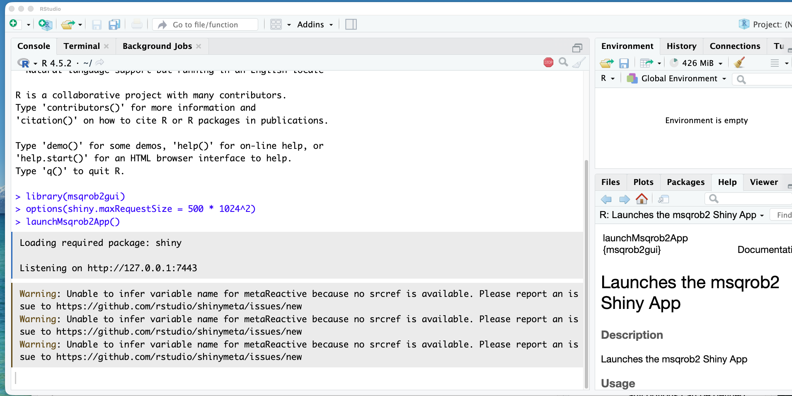
Note, that the shiny app opens in a new browser window.
Note, that it is also possible to
- open a modelling app (
launchMsqrob2DataProcessingApp()) if you already have imported, data processed the raw data and stored it as aQFeatures object, e.g. with the QFeaturesGUI from the QFeatureGUI package that gives more flexibility to define your custom data processing workflow.
- open an app for data exploration (
launchMsqrob2ExploreApp()) if you already have aQFeaturesobject that you want to explore interactively.
3 Data preprocessing
Before analysing the data, we have perform data preprocessing. This to ensure the data meet our model assumptions.
3.1 Import the data
Our MS-based proteomics data analysis workflows always start with 2 pieces of data:
- The search engine output. In this tutorial, we will use the identified and quantified peptide data by DIA-NN, called
spikein248-staesetal2024.parquet. - An annotation file describing the experimental design. Each line corresponds to a sample and each column provides a sample annotation.
The first step is to upload the spikein248-staesetal2024.parquet file. This is the file that contains your precursor-level intensities. Note that the file is in long format. You can chose between four search software options, DIA-NN, Spectronaut, MaxQuant and Other (for any search engine with data in tabular format).
Here we choos DIA-NN. To upload the spikein248-staesetal2024.parquet file, click on the “Browse…” button under the “Input file” tile title. A preview of the table will appear and will let you quickly check the data.
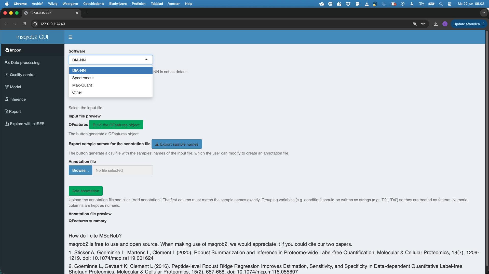
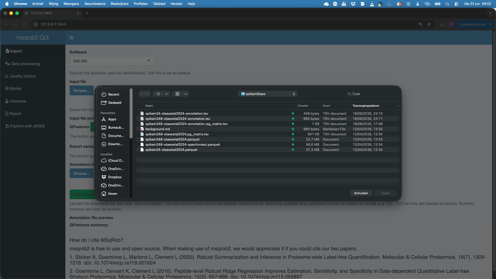
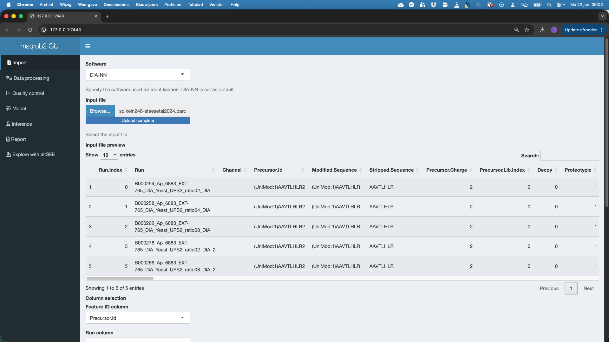
The GUI recognizes the DIA-NN parquet format and selects The Feature ID column, Run Column and Intensity Column. Note, that by default the Intensity Column is set at Precursor.Quantity. If users want to use the internal normalisation in DIA-NN, they can modify the Intensity Column to Precursor.Normalised.
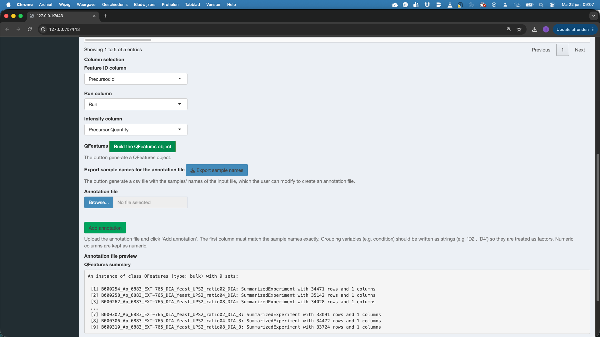
We notice that a QFeatures object is generated.
We will now also add the annotation file with information on the experimental design. If you have no annotation file yet, you can click the button “export sample names” this will provide an annotation.tsv file that contains just the sample names. You can then complete the information on the design by adding additional columns, one column for each design variable, and inputting the corresponding value for the design variable for each sample. The annotation file can be in tsv or csv format.
Here, the annotation file is already available. So we click Browse under Annotation file and select the annotation file spikein248-staesetal2024-annotation.tsv. Again a preview of the annotation file is provided. Do not forget to push the button Add Annotation to add the information in the annotation file to the QFeatures object!
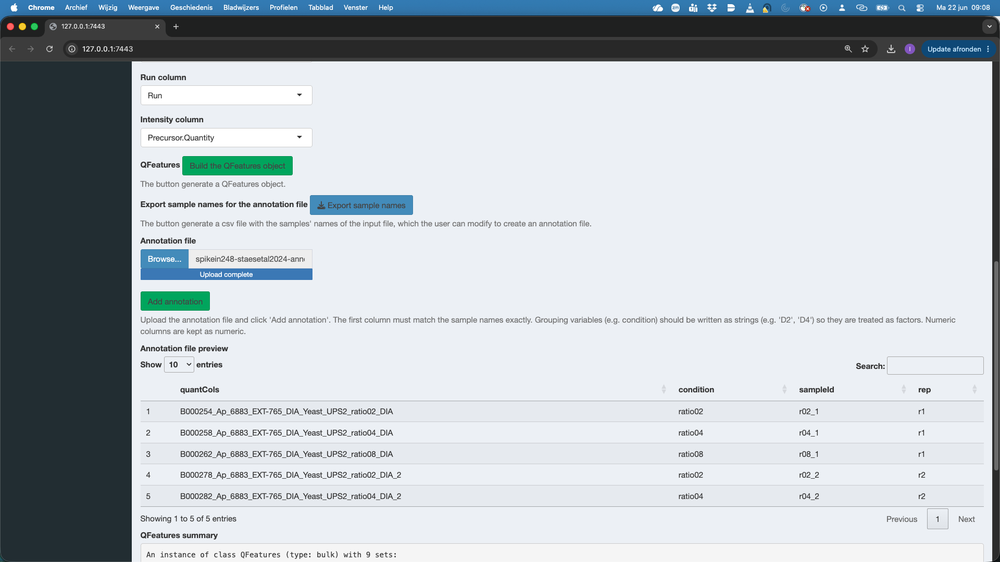
3.2 Data Processing
We now proceed to the data processing tab. The data processing tab already contains some pre-filled in options for filtering and data aggregation as we indicated that we imported data from DIA-NN software.
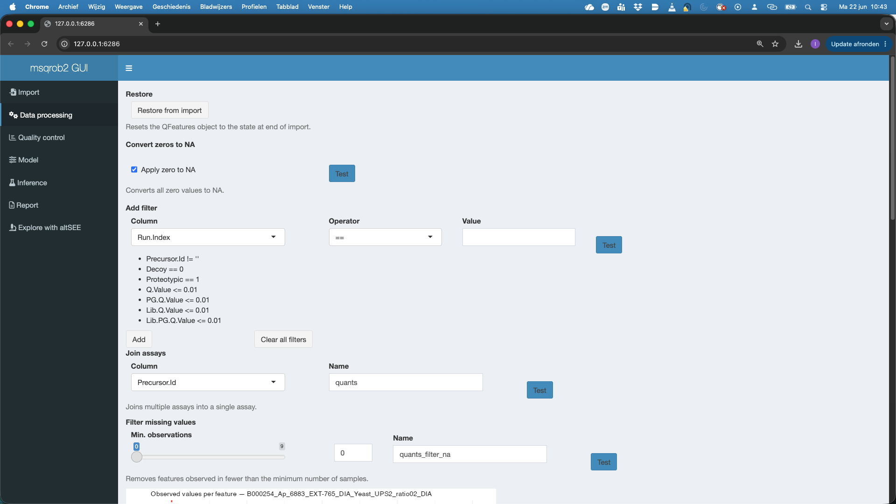
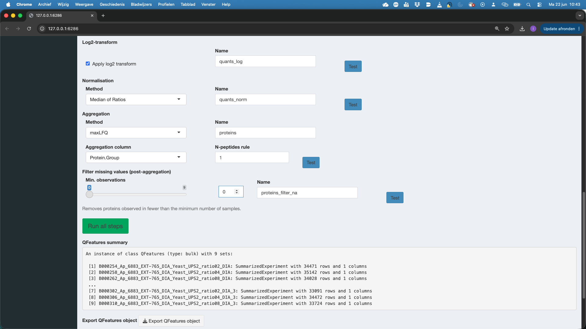
First we can resture the QFeatures object from import. This is something that we always have do if we change the data processing settings and want to redo the datas processing.
We can convert zeros to NA. This is important. Many softwares encode missing data with 0 intensity. If we want to address missingness and/or want to log-transfrom the data we have to convert the zeros to NA. You can hit the test button to test this setting.
We filter the data. We can add filters to the data based on the columns that contain information on the imported quant features. For DIA-NN, Spectronaut and MaxQuant we already provide sensible defaults. E.g.
- Precursor.Id != ’’: we remove features for which the precursor was not set
- Decoy == 0: we keep precursors that map to target sequences (decoys are indicated with 1)
- Proteotypic == 1: we only keep precursors that are proteotypic (uniquely map to a single protein)
- Q.Value <= 0.01: we keep features for which the Q-Value for identification is below an 1% FDR threshold.
- PG.Q.Value <= 0.01: we keep features for which the protein group level Q-Value for identification is below an 1% FDR threshold
- Lib.Q.Value <= 0.01: we keep features that were identified by matching between runs if their Q-Value for identification is below an 1% FDR threshold
- Lib.PG.Q.Value <= 0.01: we keep features that were identified by matching between runs if their protein group level Q-Value for identification is below an 1% FDR threshold
- Users can add additional filtering criteria.
For maxQuant this for instance becomes
- Proteins != ’’: we remove precursors that have not been mapped to a protein (!= –> is not equal to)
- Reverse != ‘+’: we remove precursors that are matched to decoys sequences
- Contaminants != ‘+’ or Potential.contaminant != ‘+’: we remove precursors are matched to contaminants (variable name for contaminants depends on MaxQuant version and is automatically detected).
Join assays: DIA-NN parquet files are in long format, then each run is stored in a different set. The sets can be joined so that we have all data for all samples/runs in the same set. By default we join the sets by using the Precursor.Id column. The joined set is by default stored as the set named
quants. Users however can change this name.Filter missing values: we can only estimate precursor or peptide characteristics if we have observed them in multiple samples. Here we will set this . If you have launched the previous test buttons, you will also see the number of features that were observed in 1, 2, 3, … samples. Here we will set the minimum number observations at
3.Log-transformation. Intensities quantified with MS are typically heteroscedastic (variance increase with the mean) and log-transformation is known to stabilise this. So by default we contact log-tranformation. Note, that you can switch this off if the data were already log-transformed.
Normalisation. By default we conduct
Median of Ratios normalisation, which corrects for differences in loading between runs, as well as for differences in composition. If you use internal normalisation in DIA-NN, e.g. by starting fromPrecursor.Normalisedintensities you can also put the normalisation method onNone.Aggregation. The data are often at the precursor, PSM or peptide level. However we want typically want to conduct the differential analysis at the protein level. So we first aggregate the data. We typically use a method that does the aggregation while accounting for the feature characteristics.
MaxLFQis a popular choice asMethodfor aggregation. The implementation in R is rather slow, so for large datasets we advicemedianPolish. If the data are already summarized or if you would like to do inference at the precursor or peptide level you can omit the Aggregation by selectingNone. Note that we also have to indicate the variable that contains information of features that belong to the same protein. For DIA-NN we set thisAggregation columntoProtein.Groupby default. We can again select theNameof the assay, which is by default set atproteins. Note, that we can also adopt anN-peptides rule. If we set it higher than 1, we will require at least #n peptides to be identified for each summarised protein quantity otherwise the protein quantity is set at NA.The last step is again filtering missing values post-aggregation. Here, we want to do a two group comparison, so we would need to have at least 4 protein level summaries to be able to compare two groups.
4 Quality control
We can now perform quality control of all the assays in the quality control tab. By default the first Assay is selected.
It is important to wait until the data is loaded, before selecting/changing the assay otherwise the app can crash
- Here we will select the
quants_logassay first, which are the filtered, log2-transformed precursor-level quantities.
We will color the plots according to the condition.
Note, that we get plots for both all features and the common features, i.e. features observed in each sample. Both plots show that the data need normalisation.
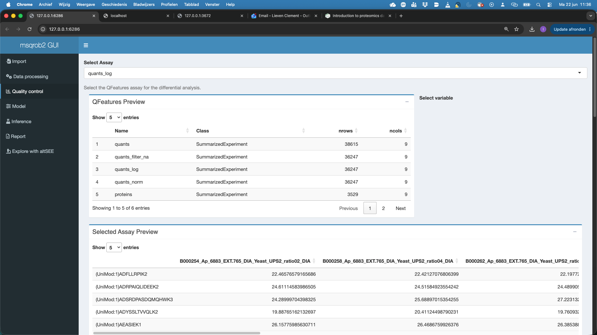
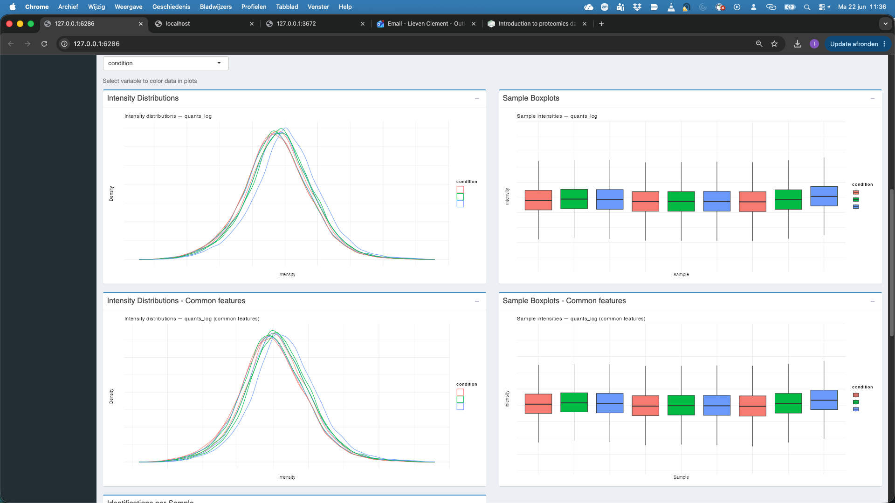
- We now change the assay to
quants_normwhich are the filtered, log2-transformed and normalised precursor-level quantities. We observe that upon medianOfRatio normalisation, the distributions of both all features and the common features are comparable.
We also observe that the number of identified features per sample is also comparable.
We now perform Dimensionality reduction. We have to hit the Run button first. Note, that we have to rerun the Run button each time we change the assay. We see that the samples align somewhat according to the spikein condition.
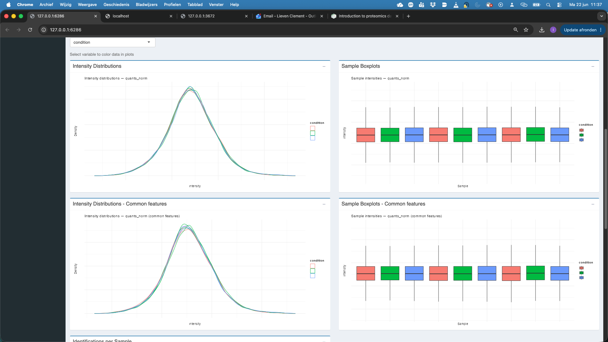
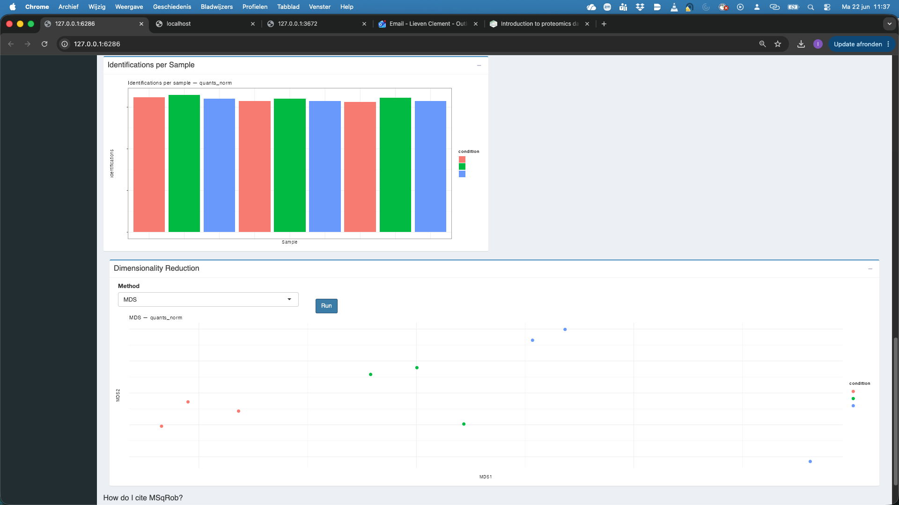
- We now change the assay to
proteins_filter_nawhich are the filtered, log2-transformed, normalised and aggregated protein-level quantities.
We observe that also at the protein level the distribution of all features and the common features nicely align. At the protein level the identifications per sample are also very comparable. If we rehit theRunbutton we also observe that the samples are better separated upon dimensionality reduction when starting from protein level summaries.
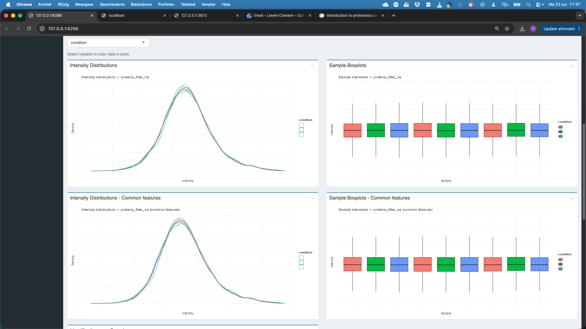
5 Data Modeling
We will now model the data at the protein level.
- We select the
protein_filter_naset inSelect Assay - We can model the sources of variation in the data using the variables in the annotation file. In this experimental design, we can model a single source of variation: spike-in concentration8. All remaining sources of variability, e.g. pipetting errors, MS run to run variability, etc will be lumped in the residual variability (error term). We can do this by using the variable condition. We have to defien a model formula for that. The model always starts with
~. So we type~ conditionin theDesign formula. Note, that you can copy and paste the variable names that are listed below Build Model to avoid typing errors. - We can set the option
Ridge regression for fixed effects, which is by default set atNo. Ridge regression can stabilize the estimation of the model parameters. However, we only advice that for designs with many model parameters. - We can set the option
Robust regression for fixed effects, which is by default set atYes. This robustifies the parameter estimation against outliers, which often occur in proteomics data. - As soon as a valid model is formulated you will see that a plot appears under Visualize Design. The plot shows the different means that are modeled. Here we see that
- Do not forget to hit the
Fit Model!button to fit the model for each feature of the selected assay.
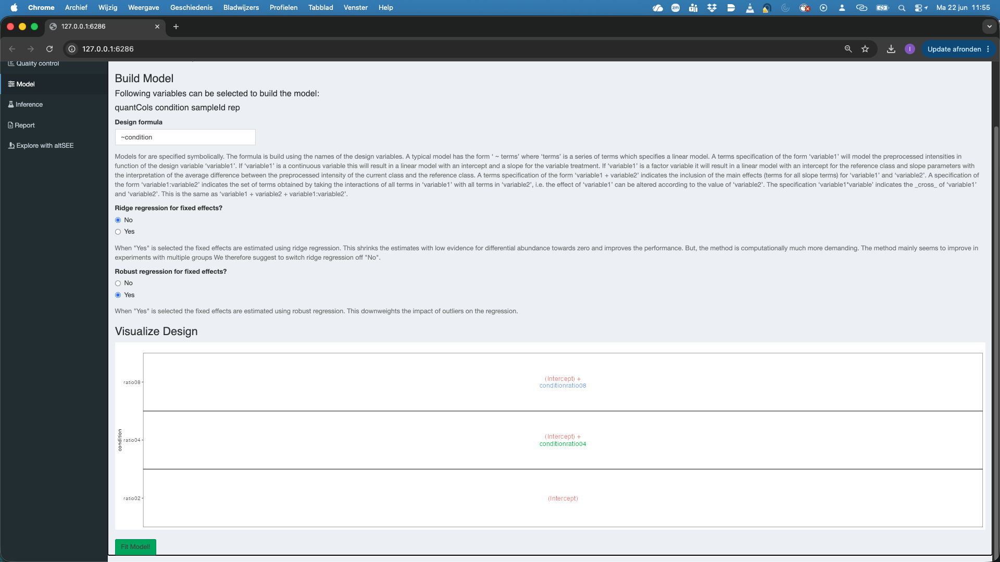
6 Inference tab
We can now conduct formal hypothesis tests for each feature. We do this in the inference tab.
We can add contrasts, which define the null hypothesis for a research question using linear combinations of model parameters.
In our case we would like to prioritise proteins that are differentially abundant between conditions, i.e. between ratio4 vs ratio2, ratio8 vs ratio2, and ratio 8 vs ratio 4.
Since we model the data at the log scale, we know that the difference in mean between ratio4 and ratio2 is a \(\log_2 FC\). I.e. \(\log_2 FC^{4-2}= \mu_4 - \mu_2 =\) (intercept) + conditionratio04 - (intercept) = conditionratio04. So conditionratio04 = 0 formulates the null hypothesis that a feature is not differentially abundant (DA) between condition 4 and condition 2.
So we type
conditionratio04 = 0inAdd contrastand we push theAddbutton. We see that the contrast is added.We click
Test all contrasts
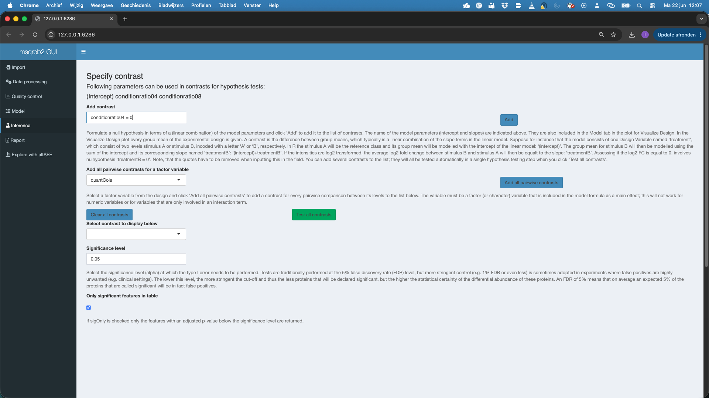
A volcano plot for the contrast appears along with a table with the DA features. And a boxplot.
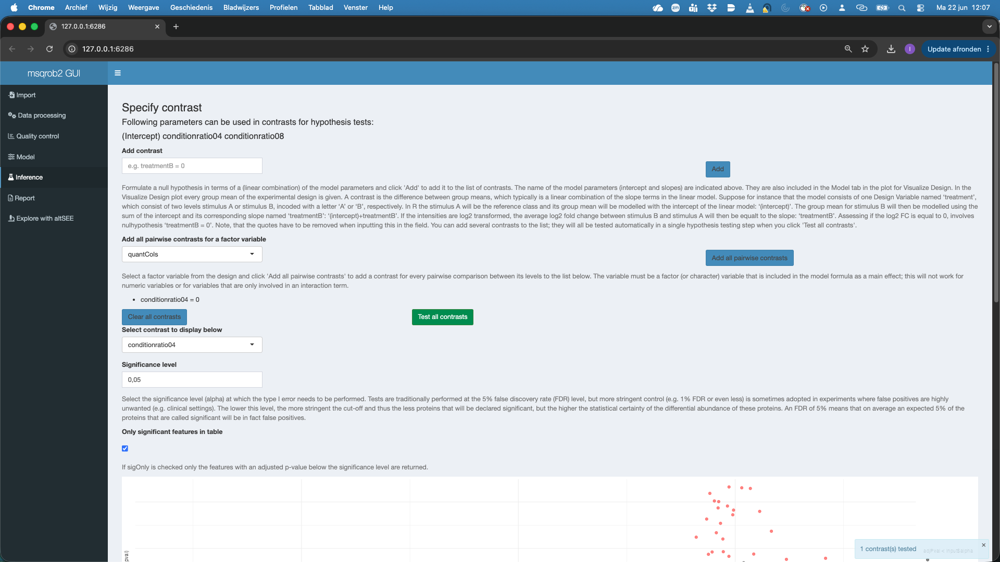
Note that all significant features are UPS proteins, which are spiked in. So at the 5% FDR we report all true positives. Also not that the red features (UPS proteins) in the volcanoplot are nicely centered around 1, which is the known fold change at the log scale: \(\log_2(4/2) = 1\).
Note that you also can set the
Significance leveland can untick significant features in table, so as to see all features.Here, we are interested in testing multiple contrasts as we have to conduct 3 pairwise tests to assess all pairwise comparisons between the treatments. We could do this by defining the two additional contrasts and adding them. However, for factors that are additive in the model, we can also select the factor variable to
Add all pairwise contrasts for a factor variableand clickAdd all pairwise contrasts. Note, that we first have to remove the contrast that we already defined, i.e. push theclear all contrastsbutton to avoid to add two times the same contrast. Note, that after hitting theTest all contrastsyou can now explore the three contrasts.
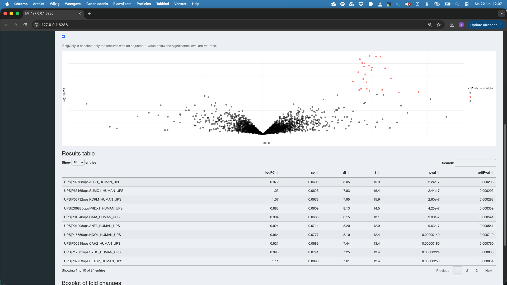
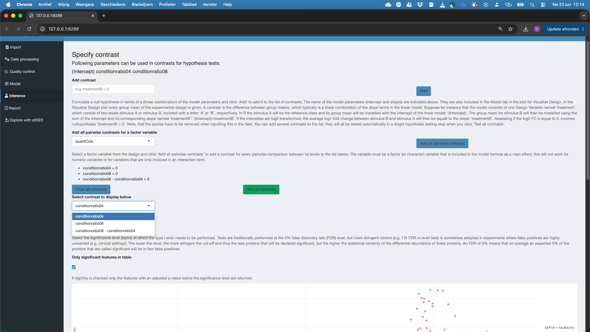
7 Report tab
You can download a report for your data analysis.
- In the report tab you can give your report a name, e.g. staes248-spikein, by default it is named
project. - Then hit the Generate full report bundle
- A screen will pop up and you will ask to choose a location to store the zip bundle. Note, that a timestamp is automatically added to your report name.
If you unzip the bundle you will see that it contains:
- Input search results
- Annotation file
- Rmarkdown file for the data processing.
- Rmarkdown file for the modeling and inference.
- A table inference.tsv contain the results for all contrasts.
So the entire data analysis can be documented in a fully reproducible way.
Note, that the scripts can also help you to learn how to setup and automate msqrob2 data analysis workflows in a reproducible way using scripts. Note, that more info in modeling with msqrob2 can also be found in our online e-book msqrob2book.
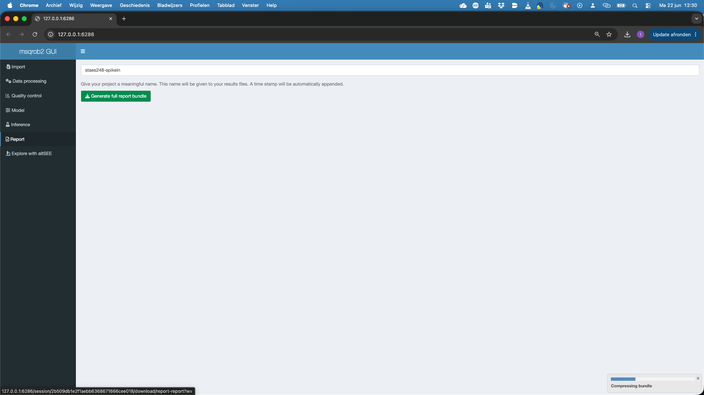
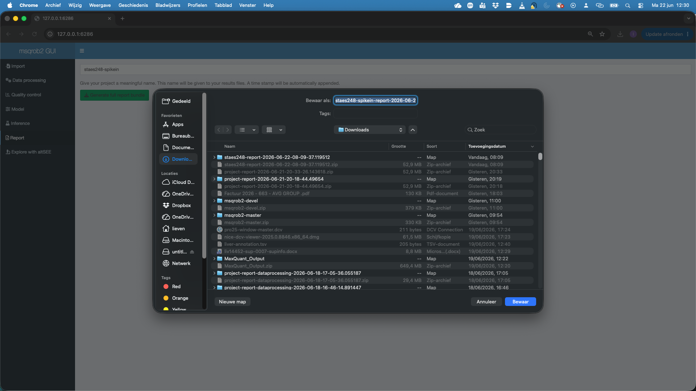
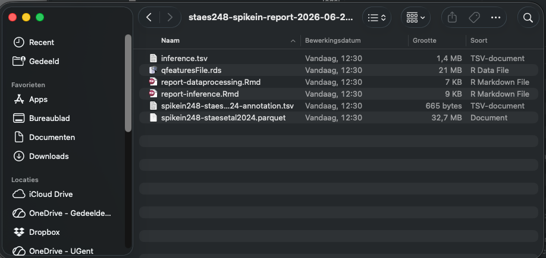
# Explore with altSEE tabYou can also explore the results interactively.
- Select the
Main experiment(that is by default the assay selected for modeling) - Select the
Alt experimentthe is by default the first assay in the QFeatures object that differs from theMain experimentdefine in 1. Here we will selectquants_norm - Optionally you can select the variable that will be used in the X-axis of the plots when starting the app (they can be changed in the app). Here, we choose the variable
sampleId - Optionally you can select the column that can link features between the Main experiment and the Alt experiment. Here, that is the
Protein.Groupthat was used for aggregation. - We hit the Launch iSEE button and a novel app will be prepared. That typically takes a while.
- Once you see `Ready. Refresh the iSEE tab after re-launching, you can clikc the link and that will open the iSEE app in a new browser window. Again this can take a while.
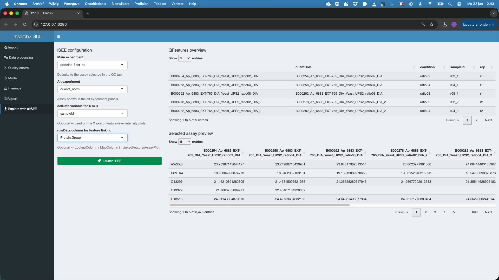
Once the iSEE app is open, we can interactively explore the data.
- The top panels show the reduced dimension plots for both the main and alt experiment. Note, that you can change the alt experiment, under data parameters if you want to explore other assays.
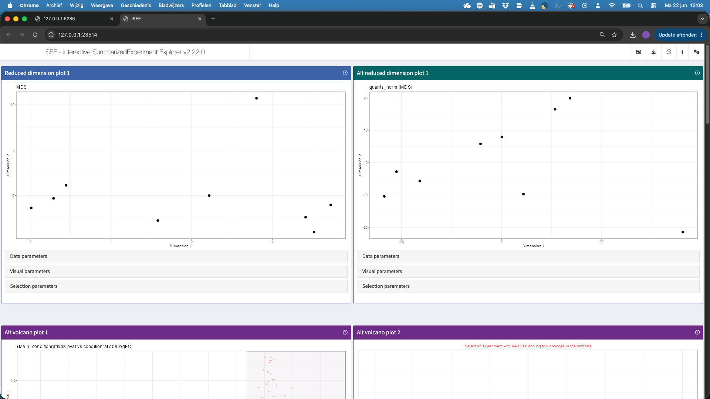
- The second panels show volcano plots. Note, that we do not have a volcano plot for the altExp because we did not fit models at the precursor level. We can also select points in the volcano plot. These will then be selected in the table below, which is linked to the volcanoplot.
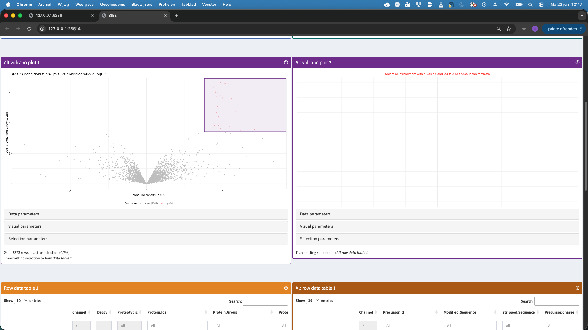
- In the table now all significant hits are shown that we selected in the volcanoplot. We can select a hit in the table, but we first order the table according to the p.value. We now select the top hit.
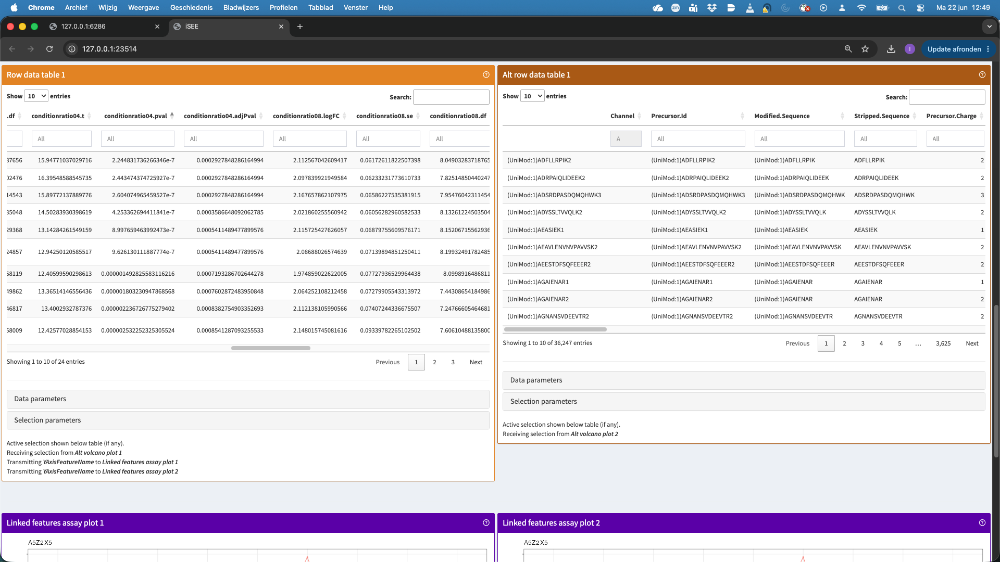
- This hit will now be visualised in the bottom panels. The plots show the results for each feature that maps to the protein in the left data table (when starting the app, as a user you can change that). Features are connected with a line, in the default visualisation.
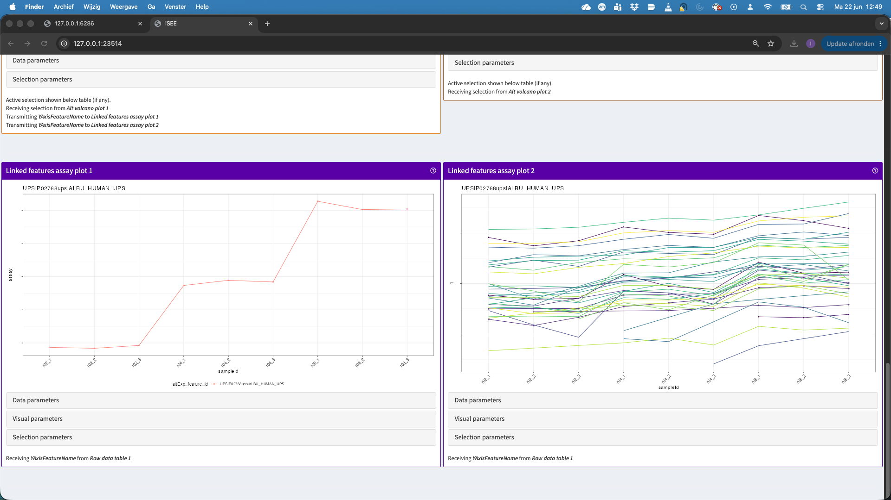
- We can also change the plot layout, e.g. to show violin plots for the precursors. E.g click data parameters > Plot type > automatic. For factor variables in the x axis, by default we get a violin plot.
You can also change the colors, split the panels, etc. When you play with theVisualisation parameters. You can click theQuestion marknext to the panel to get a panel tour.
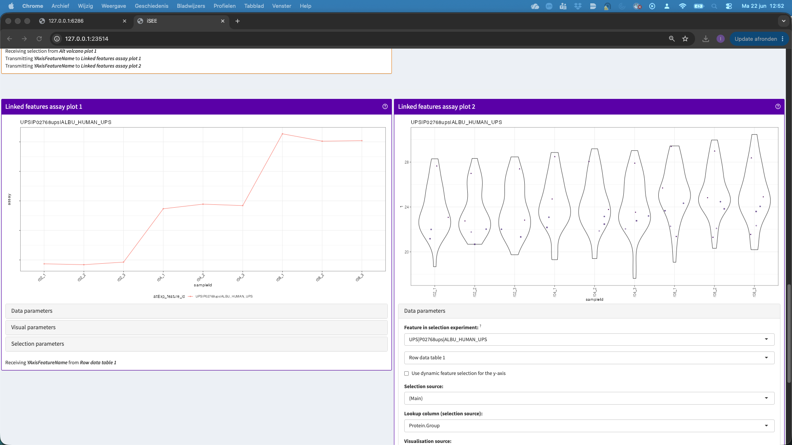
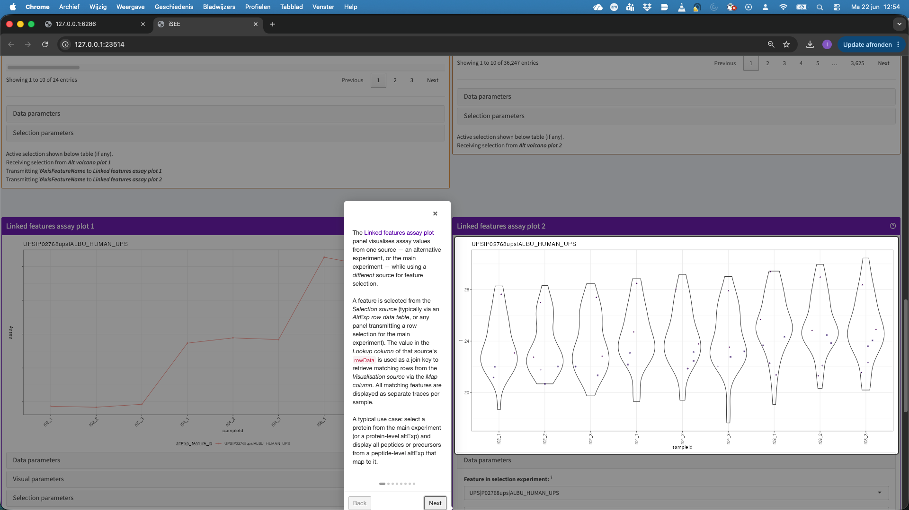
- You can change the contrast by going back to the volcano plot and click on Data parameters and select e.g.,
conditionratio08.pvalandconditionratio08.logFC. You can now again select a region in the plot to display the features in the table below. You can also ask for a panel tour…
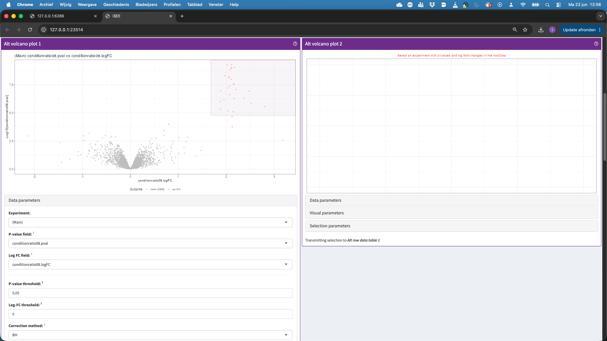